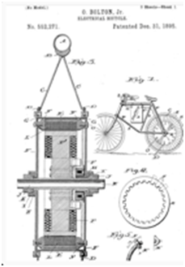

|  | Yes. Believe it or not, e-bikes have been around since the 1890's. In 1895 Ogden Bolton Jr. was granted a patent for a battery-powered bicycle. Mr. Bolton was truly ahead of his time, for e-bikes would not achieve worldwide recognition until the 1990's. With advances in the technology, such as the "power on-demand" twist throttle, e-bike sales have exploded. More and more, eco- and cash-conscious consumers are discovering the benefits of owning an e-bike. Industry analysts expect the number of e-bikes on the road in America to more than double in the coming year. Take a look at the original information of the patent filing from 1895! |
To begin understanding what an electric bike is all about, start with the image of a regular bicycle. Then add several electrical components to it, such as a motor, a battery, and a controller – all seamlessly integrated into the design. With these items, you now have the fundamentals of any electric bicycle on the market.
It's important to realize that an electric bike will function normally just like a regular bicycle. An electric bike will pedal like a regular bicycle and handle like a regular bicycle. By and large, an electric bike will use the same parts as a regular bicycle.
Comfort and quality of the components are still as important on an electric bike as they are on a regular bicycle.
Electric bike motors come in a wide variety of power ratings, from 200W to 1,000W or more. The legal limit in the US is 750W, although different states can set their own limits.
Think of this limit kind of like horsepower. A higher rating means that the bike will be able to pull more weight with greater ease – but at the expense of using more battery capacity while doing so. Consequently, a 750W motor will drain the battery much quicker than a 250W one, but it will be more powerful.
By and large, electric bikes are simple to use, ride, and maintain. Overall, they require little maintenance beyond that which a standard bike requires.
Electric bicycles are designed to be very easy to operate. As a rider, you have three modes of operation available to you:
Pedal Only – At any time, you can pedal an electric bicycle just as you would with a regular one. There is no extra resistance created by the motor, so it will feel exactly as a regular bicycle would.
Pedal-Assist (sometimes called Electric-Assist) – In this mode, you can take advantage of combined human plus electric power. Once you turn on this mode via the on/off button on the handlebars, the motor will gently provide electric power as you pedal. You can still switch gears as the terrain changes to take advantage of more torque or faster speed. It's an amazing feeling to use pedal-assist mode, as it makes cycling effortless, flattens out the hills, and frees you to just enjoy yourself and the scenery.
Pedal-assist mode is meant to complement your pedaling. A simple press of a button switches you through the different levels.
Electric-Only – This mode of operation allows you to sit back and take a break, as you let the motor do the work. To use "electric only" mode, simply twist the throttle located on the left handlebar and you'll feel the motor kick in and propel you forward. Keep the throttle turned to continue along or let go if you're ready to start pedaling or wish to come to a stop. Please note that due to Federal regulations, the top speed in electric-only mode is limited to 20 miles per hour.
Absolutely NOT! Federal law considers electric bicycles in the class as regular bicycles, provided they meet two conditions: (1) the top speed in "electric only" mode is 20 miles per hour; and (2) the motor power must be no more than 750W.
PlugnGo electric bicycles meet both of the federal requirements. We cap the top speed in "electric only" mode at 20 miles per hour, although you can of course go faster on your bike with pedal power if you wish. Our motors are rated at 250W-750W, which is well within federal limits.
Consequently, electric bikes do not need a special registration, license, or insurance to operate. Moreover, they enjoy the same privileges as regular bicycles, such as being allowed to travel in available bike lanes.